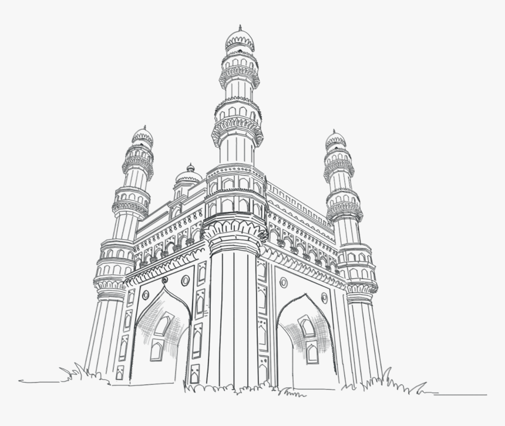

#Charminar
.

Beating in the heart of the city, Charminar is a precious gem of Hyderabad city, and pride of the country India. It is a heritage left by the Qutb Shahi Dynasty to mark the brilliance of its sultanate. The oldest mosque constructed in the ‘City of Nizams’ is also established in this massive example of Indo Islamic architecture Charminar, which itself means four minarets and justifies the construction of the monument.
Nestled near the bank of the river Musi, this ultimate monument was the idea of Muhammad Quli Qutb Shah which became tangible in the year 1591 AD. It was constructed when the Sultan changed the former city to the present Hyderabad due to an extreme shortage of water. However, there are more stories related to it but marking the beginning of a new era sounds the most realistic.
Also considered as the ‘Arc de Triomphe of the East’, Charminar is the heartbeat of the old city of Hyderabad. The monument is taken into consideration to further expand the city so you will be able to notice the development around it. One of the examples is the expansive Laad Bazaar, which is surrounding the elegant masterpiece and brimming with mouth-watering delicacies, authentic street food, colorful lacquer bangles, shining pearls, excellent jewelry and many more things to take home.
.
Explore Charminar!

Places to eat
|

Best time to visit Charminar |

Things to do |

History of Charminar |
How to reach Charminar |
.
Rate your Experience!